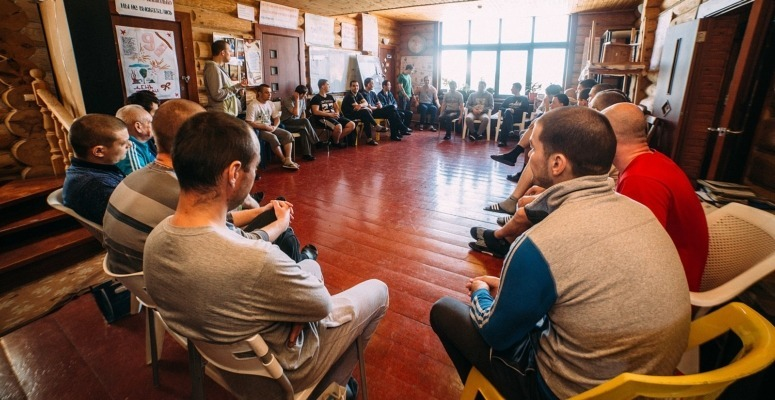

Substance Abuse
What is Substance Abuse?
Substance abuse is using substances so frequently and uncontrolled that daily life is affected. The following listed signs are signs if you have developed a dependency on substances:
- Avoids social and recreational activities.
- The need for an increase amount of the drug to recieve the effect of the drug.
- Withdrawal symptoms occur if intake is decreased or stopped completely.

Types of Substance Abuse
People of any age, gender, race can all misuse substances
How much of an intake is considered as substance abuse?. It is to be noted that body mass and genetics also play a role in determining the limit of each substances or drugs, hence you should go for a medical checkup if you wish know what the limit is for you:
- Alcohol
- Men (on average*)
- Women (on average*)
- Marijuana
- Heroin
- Other Drugs
4++ drinks in a day or 14++ drinks in a week is considered as substance abuse.
3++ drinks in a day or 7++ drinks in a week is considered as substance abuse.
No more than 40 mg of marijuana, regardless of a person's sex or age.
No more than approximately 200mg, regardless of a person's sex or age.
Please refer to the FDA (US Food & Drugs Administration) guidelines for more info.

What leads people to misuse substances
Causes
The reasons that may prove why people misuse substances
- Overwhemling Stress
- Enviromental Factors
- PTSD and other past events
- Manage physical pains
- Recreational purposes
- Avoid Withdrawal symptoms

Treatments for Substance Abuse
People with substance abuse would require mainly Proffesional help as it is a serious issue.
- Rehabilitation
- Therapy

Preventions for Substance Abuse
The best way to prevent substance abuse is to:
- Raise Awareness on the consequences of substance abuse.
- Increase the amount of support given to those whom are struggling with traumatic issues.
- Raise awarness on key issues such as bullying, abuse etc...